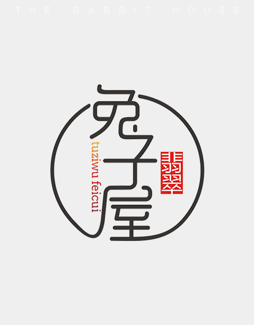

兔子屋简介
中 文 名： 兔子屋·翡翠CLUB
所属行业： 翡翠珠宝
经营范围： 开采、评估、加工、定制
兔子屋翡翠CLUB是一家集原石开采、加工镶嵌、高端定制、世界工艺大师指定雕刻，成品运输于一体的综合型翡翠贸易有限公司。主营A货高档翡翠，第一手货源，一线直击选料，无中间商。最大限度保留玉石本真的价值。 公司秉承，顶级品质打造传世瑰宝的理念，致力于中国传统翡翠文化的传播与推广，引领高端订制创意新潮流。

兔子屋LOGO
THE WORK IS ETERNAL
中 文 名： 兔子屋·翡翠CLUB
所属行业： 翡翠珠宝
经营范围： 开采、评估、加工、定制
兔子屋翡翠CLUB是一家集原石开采、加工镶嵌、高端定制、世界工艺大师指定雕刻，成品运输于一体的综合型翡翠贸易有限公司。主营A货高档翡翠，第一手货源，一线直击选料，无中间商。最大限度保留玉石本真的价值。 公司秉承，顶级品质打造传世瑰宝的理念，致力于中国传统翡翠文化的传播与推广，引领高端订制创意新潮流。
ORIGIN OF THE BRAND
近年来，随着社会经济的不断发展，人们对于高端珠宝的需求日益增大。面对原材料的极度稀缺与价格飞涨，矿源枯竭，原料市场秩序混乱，低端翡翠的肆意泛滥，造假手段的不断精进，我们已经很难判断出自己买到的货品是不是一件真正意义上具有价值的宝贝。
2015年，朱欢欢女士创立了兔子屋翡翠，她将这些惊艳绝伦的传世佳作带入到了大家的视野中，让更多的人了解到了翡翠的极致之美，它不止是大自然馈赠的灵物，也是一种尊贵的象征，品味的彰显，每一件瑰宝都在寻找他命中注定之人，而朱欢欢女士最大的愿望，就是将这世间绝无仅有的天赐之物带给世人。
运营至今，我们依然不忘初心，秉承着对中国传统文化的热爱与坚守，引领行业返朴还淳，诚信服务，精益求精，致力于打造顶级品质传世经典的好作品。
BRAND STORY
兔子屋·翡翠CLUB成立至今，先后同国内外多家500强企业、银行私行开展长期业务合作，在中国市场推广高端翡翠珠宝设计与定制业务，受到众多珍宝收藏家的广泛赞扬。
2017年8月，兔子屋·翡翠CLUB联合中国工商银行私人银行共同举办高端翡翠品鉴会，品鉴会还特别邀请了从事翡翠行业十余年对于翡翠文化有深入研究的胡建涛先生，通过《君子佩玉:中国翡翠文化》的专题分享，胡先生从什么是翡翠、为何要拥有翡翠、如何选择翡翠等方面，向大家分享了翡翠的相关知识，使嘉宾们受益匪浅。作为珠宝行业的后起之秀，兔子屋·翡翠CLUB专注打造全新休闲珠宝平台，实现线上线下一站式珠宝设计与定制，并延伸至采购中心，统一规范五星级售后服务，使品牌步入轻资产配置和提高生活品味的高端CLUB模式。
THE STORY OF THE TOUNDER

创始人朱欢欢女士（Michelle Zhu）出生于1987丁卯年，成长在一个翡翠世家中。从小耳濡目染，跟着奶奶和长辈们学习了解到了很多关于翡翠的知识。并慢慢爱上了这种美丽的石头。儿时经常会为了收获一件精致的翡翠小首饰而激动良久。十八岁生日的时候，奶奶送的成人礼礼物便是一只精美的翡翠手镯，这件礼物让她感到惊喜又幸福。一直悉心保存至今。自此，她也渐渐走上了翡翠收藏之路。
谈到自己如何进入珠宝行业，还得从自己的一个翡翠梦说起。长大后的Michelle Zhu进入了大使馆工作，渐渐发现其实许多国际友人都非常热爱中国的传统文化，特别是文玩翡翠。但是又碍于不会挑选，种类繁多，真假难辨，不知如何下手。这时，Michelle Zhu想到翡翠其实也是作为中国的国粹，一种文化的传承，她便想着，何不利用自己的知识与资源，把这种美好的宝石带给更多的人，让更多的人认识它，了解它，懂得如何去欣赏他。2015年6月6日，Michelle Zhu创立了兔子屋翡翠，自此为更多的人开启了一条通向美的大门。Michelle Zhu对珠宝独特的艺术审美，更本着传播中国传统文化的初心，坚定了她在翡翠珠宝行业走下去的决心。自己成立兔子屋翡翠也是希望能够给大家带来更多美的感受。
兔子屋翡翠主营高档翡翠饰品，高端私人订制。独家矿源，缅甸一线翡翠裸石直击选料，一手货源对庄。没有中间商，从选料雕刻加工到镶嵌，一站式服务。我们的产品多由著名设计师倾力打造，奢华大气、高贵典雅。严苛的选材到精湛的手工技艺，每件珠宝作品均是自然与艺术的完美融合。是业界人士与收藏爱好者心中的艺术珍品，更成为人们身份、品味、财富和文化的象征，每件宝贝都堪称传世艺术品。
兔子屋翡翠作为一个新兴品牌，在珠宝行业来讲还是属于刚起步阶段，不过我们对于未来的发展很有信心。现在品牌主要专注打造全新休闲珠宝平台，实现线上线下一站式珠宝设计与定制，统一规范五星级售后服务，旨在使品牌步入轻资产配置和提高生活品味的高端CLUB模式。成立至今，我们先后同国内外多家500强企业、银行私行等进行了长期的业务合作，在中国市场推广高端翡翠珠宝设计与定制业务，收到客户的一致好评。客户的认可就是我们前进的最大的动力和底气。

关
于
我
们